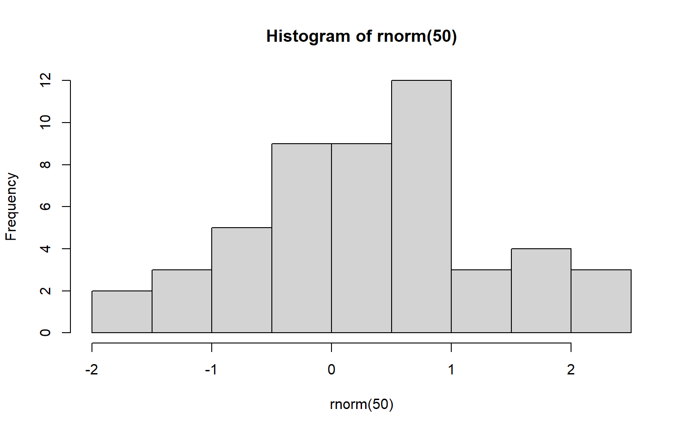

[1] 33 Introduction to R programming basics and R studio
3.1 What is R and RStudio?
R is a programming language and software environment designed mainly for statistical computing, data analysis, and visualization.
Why R?
Free and Open-Source
Rapidly developing
Excellent for Visualization and statistical data analysis
Active community of users and developers
3.2 What is RStudio?
An Integrated Development Environment (IDE) for R.
Why RStudio?
Makes working with R much easier.
3.3 Download and Installing R, RStudio and Rtools
Visit the website https://posit.co/download/rstudio-desktop/ and download the latest version of R and RStudio software.
If you are a Windows user, you will also need to install an additional software package: Rtools.
Note:
Double-click the R software .exe file, follow the installation wizard by keeping the default settings and clicking Next, and finally click Finish to complete the installation.
After installing R, double-click the RStudio .exe file, follow the installation wizard by keeping the default settings and clicking Next, and then click Finish to complete the setup.
Please ensure that you install R before installing RStudio.
After installing both R and RStudio, double-click the RStudio icon to open it. In the console, type the following command:
R.version.string
Press Enter, and note down the displayed R version in your notebook.
To install Rtools
Download Rtools from here https://cran.r-project.org/bin/windows/Rtools/
Download the correct Rtools installer for your R version from the official Comprehensive R Archive Network (CRAN) page.
For example:
- If your R version is 4.5.x, download Rtools45quarto render
If your R version is 4.4.x, download Rtools44
If your R version is 4.3.x, download Rtools43
If your R version is 4.2.x, download Rtools42
If your R version is 4.0–4.1.x, download Rtools40
- Run the downloaded .exe file and follow the installer prompts, typically accepting the default options and installation directory.
3.4 Introduction to R Studio Panes
Steps
- Double click the RStudio icon. You will see a window like this.
2. Go to File -> New File -> RScript
Source/Script: Where you write and save your R code.
Console: Where the code is executed and results are displayed.
Environment, History, Connections, Build, Tutorial: Where objects, past commands, database connections, projects, and learning aids are managed.
Files, Plots, Packages, Help, Viewer, Presentation: Where you browse files, view plots, manage packages, access help, preview outputs, and create presentations.
3.5 Creating an R Project
Creating an R Project means setting up a working directory where all your related files, such as scripts, data, and outputs are organized and stored together.
Steps:
File -> New Project and follow the below steops
Give a project name and location to create project folder.
Once you have created a project, Windows users will see the project name displayed in the top-right corner of RStudio; for other operating systems, the location may vary but it will still be visible in the RStudio interface.
Type the following command on the console to view the project location.
getwd()This will give you the current working directory. The working directory is the folder where R reads and saves files. When you create an R Project, the project folder itself becomes the working directory, so the project and working directory are essentially the same.
3.6 R as a calculator
Let’s type some simple commands. Type these in the console.
[1] 100[1] 0.01 [1] 0.15890854 -0.80912112 -1.74620780 -1.01589683 -0.24016239 -0.16984901
[7] -2.65781902 -0.81594270 -0.80903656 -2.43277390 -1.09211619 0.93945282
[13] 0.07951464 -0.87402510 -0.18756695 0.76958998 1.41612598 -0.14797052
[19] 0.88573395 -1.87736848 -0.81130150 1.64844134 0.80620637 -0.98552805
[25] -1.80498428 -0.71831727 -1.78919021 -0.53482129 1.85204628 -0.06494345
[31] 1.68924135 1.33387059 -1.96524234 -1.39668797 -0.19497268 -0.30040082
[37] 0.39985305 -1.66686929 -0.42462608 -0.35028017 -1.57951576 0.68236928
[43] 0.86090897 2.32847579 -1.01623305 0.57427954 1.36189013 -0.38736247
[49] 0.21443356 -1.10939444
In R, square brackets [ ] indicate the index or position of an element in a vector, list, or other data structure.
3.7 Commenting
Commenting in R is adding notes or explanations in your code using #; comments are ignored when the code runs but help you and others understand the code.
[1] 3Notice the changes in the “History” and “Environment” tabs.
3.8 Working on a script file
A script file is a text file where you write and save R code so it can be run multiple times without retyping.
Open a script file and save it as “script1.R”. Type the following in the script file.
# 1. Assign values
x <- 10
y <- 5
# 2. Basic arithmetic
sum <- x + y
diff <- x - y
prod <- x * y
quot <- x / y
# 3. Create a vector
vec <- c(1, 2, 3, 4, 5)
# 4. Access elements (indexing)
vec[1] # first element
vec[2:4] # elements 2 to 4
# 5. Basic functions
mean(vec) # mean of vector
sum(vec) # sum of elements
length(vec) # number of elements
# 6. Create a simple data frame
df <- data.frame(Name = c("A","B","C"), Score = c(10, 15, 20))
# 7. View data
df
head(df) # first few rows
# 8. Help
?mean # get help for a function3.9 Working with vectors
A vector in R is a sequence of elements of the same type (numeric, character, or logical), and it is one of the basic data structures used to store and manipulate data.
[1] 1[1] "banana" "cherry"[1] 15 Min. 1st Qu. Median Mean 3rd Qu. Max.
1 2 3 3 4 5 [1] 4 Length Class Mode
4 character character fruits
apple banana cherry
2 1 1 3.10 Access help file
Functions in R tell R to perform a specific task. To learn more about a function, type ?function_name in the console—this will open the function’s help file.
Example
?meanIn the help file, mean {base} indicates that the mean function is part of the base package. You can think of packages in R like apps on your mobile phone: the default installation provides some basic packages, and for additional functionality, you can install extra packages just like installing new apps on your phone.
3.11 Installing packages
There are two ways that we can use to install packages.
Method 1
Go to the “Packages” tab and click install.
Then, type the names of the packages you need to install and click “install”.
The installation process will then start, and you will see progress messages displayed in the console.
Method 2
Type the following command on the console.
To install tidyverse package.
install.packages("tidyverse")To install palmerpenguins package.
install.packages("palmerpenguins")General format: Replace “xxx” with the name of the package you need to install.
install.packages(“xxx”)
3.12 Working with packages
To use a package in R, you first need to load it. Whenever you want to access a function from that package, use the following command.
For example to work with functions in tidyverse packages
TO work with palmerpenguins
3.13 Factors
A factor in R is used to represent categorical data. It stores both the values and the set of possible levels (categories) for the variable.
[1] Male Female Female Male
Levels: Female Male[1] "Female" "Male" gender
Female Male
2 2 Female Male
2 2 Your turn:
Create the gender vector as a character vector, then run table(gender) and summary(gender). Observe the differences in the outputs compared to when gender is a factor.
3.14 Create a tibble
# A tibble: 10 × 4
ID Gender Weight Height
<int> <chr> <dbl> <dbl>
1 1 male 5 10
2 2 male 10 20
3 3 male 15 30
4 4 male 7 14
5 5 male 7.5 15
6 6 female 10.5 21
7 7 female 8.5 17
8 8 female 6 12
9 9 female 8 16
10 10 female 11.5 23Some functions that we can use with tibbles
# A tibble: 6 × 4
ID Gender Weight Height
<int> <chr> <dbl> <dbl>
1 1 male 5 10
2 2 male 10 20
3 3 male 15 30
4 4 male 7 14
5 5 male 7.5 15
6 6 female 10.5 21# A tibble: 6 × 4
ID Gender Weight Height
<int> <chr> <dbl> <dbl>
1 5 male 7.5 15
2 6 female 10.5 21
3 7 female 8.5 17
4 8 female 6 12
5 9 female 8 16
6 10 female 11.5 23Rows: 10
Columns: 4
$ ID <int> 1, 2, 3, 4, 5, 6, 7, 8, 9, 10
$ Gender <chr> "male", "male", "male", "male", "male", "female", "female", "fe…
$ Weight <dbl> 5.0, 10.0, 15.0, 7.0, 7.5, 10.5, 8.5, 6.0, 8.0, 11.5
$ Height <dbl> 10, 20, 30, 14, 15, 21, 17, 12, 16, 23 ID Gender Weight Height
Min. : 1.00 Length:10 Min. : 5.000 Min. :10.00
1st Qu.: 3.25 Class :character 1st Qu.: 7.125 1st Qu.:14.25
Median : 5.50 Mode :character Median : 8.250 Median :16.50
Mean : 5.50 Mean : 8.900 Mean :17.80
3rd Qu.: 7.75 3rd Qu.:10.375 3rd Qu.:20.75
Max. :10.00 Max. :15.000 Max. :30.00 [1] 10 4